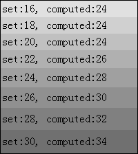

RE1006: 单元格的高度计算受其 'padding' 和 'line-height' 的影响
标准参考
关于W3C CSS 2.1 中表格高度计算规范请参考：http://www.w3.org/TR/CSS21/tables.html#height-layout
问题描述
单元格的高度计算受其 'padding' 和 'line-height' 的影响。
造成的影响
这个现象将造成表格单元格高度的计算差异，若单元格行数较多，可能最终造成表格的总高度在不同浏览器中出现很大的区别。
受影响的浏览器
| 所有浏览器 |
|---|
问题分析
1. 单元格的高度计算受其 'padding' 样式的影响
分析以下代码：
<style>
table { width:200px; border:1px solid black; }
td { padding:2px; line-height:20px; }
</style>
<table cellpadding="0" cellspacing="0">
<script>
for (var i = 0; i < 8; i++) {
document.write('<tr>');
document.write('<td id="td' + i + '" style="height:' + (i * 2 + 16) + 'px; background:rgb(' + (224 - i * 16) + ',' + (224 - i * 16) + ',' + (224 - i * 16) + ');">set:' + (i * 2 + 16) + '</td>');
document.write('</tr>');
}
</script>
</table>
<script>
function $(id) { return document.getElementById(id); }
for (var i = 0; i < 8; i++) {
$("td" + i).innerHTML += ", computed:" + $("td" + i).offsetHeight;
}
</script>
上面代码动态创建了若干 TD 元素，TD 元素的设定高度由 16px 至 30px 以 2px 为单位递增（set），之后通过脚本计算出 TD 元素的实际高度（computed）。
这段代码在不同浏览器中运行结果如下：
| IE6(S) IE7(S) IE8(S) Chrome(S) Safari(S) | IE6(Q) IE7(Q) IE8(Q) Firefox Opera Chrome(Q) Safari(Q) |
|---|---|
|  |  |
各 TD 元素的 'padding-top' 及 'padding-bottom' 均为 2px，'line-height' 均为 20px。
可见：
- 在 IE(Q) Chrome(Q) Safari(Q) Firefox Opera 中，其的高度计算遵从如下规律：
- TD 的 height 值小于等于line-height + padding-top + padding-bottom 值时：
TD 的 offsetHeight = TD 内行框数 x line-height + padding-top + padding-bottom； - TD 的 height 值大于等于line-height + padding-top + padding-bottom 值时：
TD 的 offsetHeight = height(此 height 为最小高度，当内容高度大于height时，offsetHeight等于实际高度)。
- 在 IE(S) Chrome(S) Safari(S) 中，其的高度计算遵从如下规律：
- TD 的 height 值小于等于 line-height 值时：
TD 的 offsetHeight = TD 内行框数 x line-height + padding-top + padding-bottom； - TD 的 height 值大于等于 line-height 值时：
TD 的 offsetHeight = height + padding-top + padding-bottom。(此 height 为最小高度，当内容高度大于height时，offsetHeight等于实际高度)
TABLE 元素的 cellpadding 属性不为0时，情况与上面类似，因为 TABLE[cellpadding="2"] 相当于每一个 TD 元素的 'padding-top' 'padding-bottom' 均为 2px。
2. 'line-height' 样式对单元格的高度计算的影响
分析以下代码：
<style>
table { width:200px; border:1px solid black; }
td { height:20px; }
</style>
<table cellpadding="0" cellspacing="0">
<script>
for (var i = 0; i < 8; i++) {
document.write('<tr>');
document.write('<td id="td' + i + '" style="line-height:' + (i * 2 + 16) + 'px; background:rgb(' + (224 - i * 16) + ',' + (224 - i * 16) + ',' + (224 - i * 16) + ');">set:' + (i * 2 + 16) + '</td>');
document.write('</tr>');
}
</script>
</table>
<script>
function $(id) { return document.getElementById(id); }
for (var i = 0; i < 8; i++) {
$("td" + i).innerHTML += ", computed:" + $("td" + i).offsetHeight;
}
</script>
上面代码与第一节中的代码类似，但是单元格 TD 元素的 'height' 属性均设定为 20px，不同的为每个 TD 元素的 'line-height'样式，则所有浏览器中运行效果均相同：
| 所有浏览器 |
|---|
 |
各浏览器对TD元素的实际高度计算均为：Max(height, ling-height) 。
解决方案
- 避免为 TD 元素设置 'padding-top' 'padding-bottom' 特性
- 避免为 TABLE 元素的 cellpadding 属性值。
参见
知识库
相关问题
测试环境
| 操作系统版本: | Windows 7 Ultimate build 7600 |
|---|---|
| 浏览器版本: |
IE6 IE7 IE8 Firefox 3.6.3 Opera 10.53 Chrome 6.0.401.1 dev Safari 4.0.5 |
| 测试页面: | td_padding.html td_line_height.html |
| 本文更新时间: | 2010-07-20 |
关键字
padding TD height line-height 边白 单元格 高度 行高